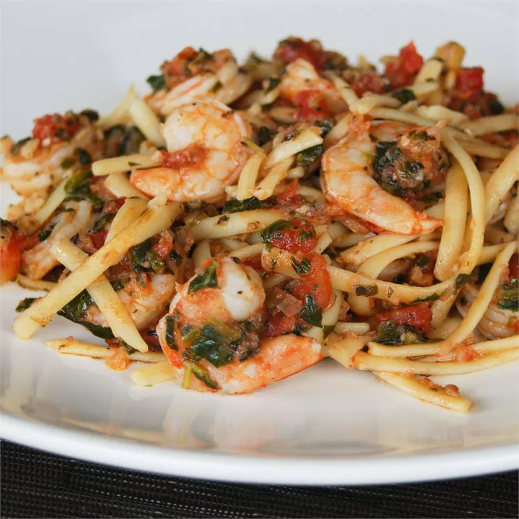

Shrimp Pasta

Description
Fresh tomatoes, shrimp, pasta, and spinach combine with fresh herbs and mozzarella for an easy summer dinner.
Ingredients
- 8 ounces dry fettuccine pasta
- 3 cloves garlic
- ½ sweet onion, cut into wedges
- 3 tablespoons fresh oregano leaves
- 4 tablespoons olive oil
- 4 medium tomatoes, chopped
- 3 tablespoons chopped fresh basil
- salt and pepper to taste
- 1 cup spinach leaves
- 1 pound cooked shrimp - peeled and deveined
- 8 ounces fresh mozzarella cheese, diced
Steps
- Bring a large pot of lightly salted water to a boil. Add pasta and cook until tender, about 8 minutes. Drain.
- Meanwhile, combine garlic, onion, and oregano in the bowl of a food processor; pulse until finely chopped. Heat olive oil in a large skillet over medium heat. Add onion mixture; cook and stir until fragrant and almost golden. Mix in tomatoes, basil, salt, and pepper. Simmer for about 5 minutes while pasta is cooking, stirring occasionally.
- Mix in spinach until wilted. Just before pasta is done, stir in shrimp and cook until heated through.
- Toss together shrimp mixture and pasta in a large serving bowl. Mix in mozzarella cheese.
Home